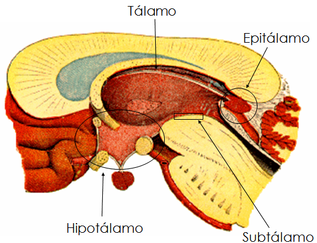
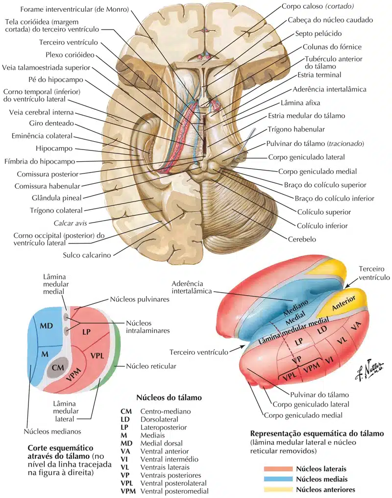
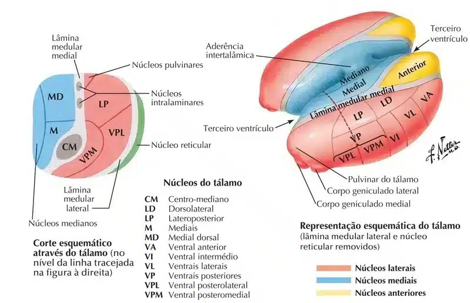
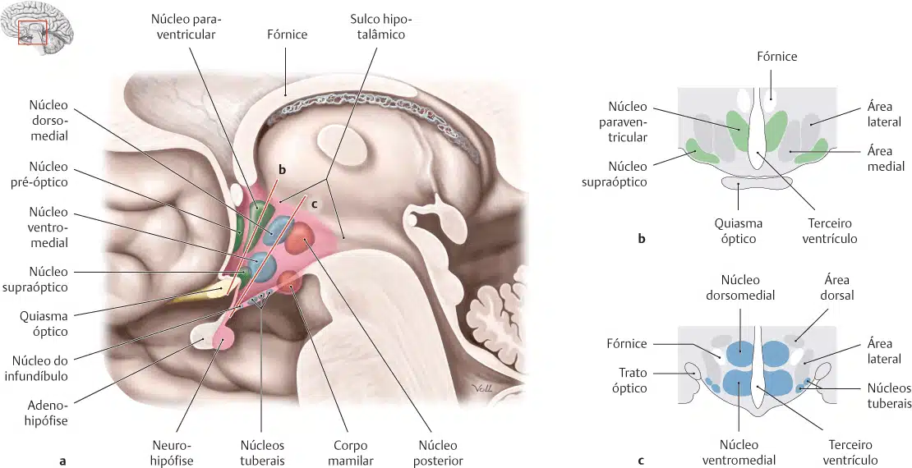
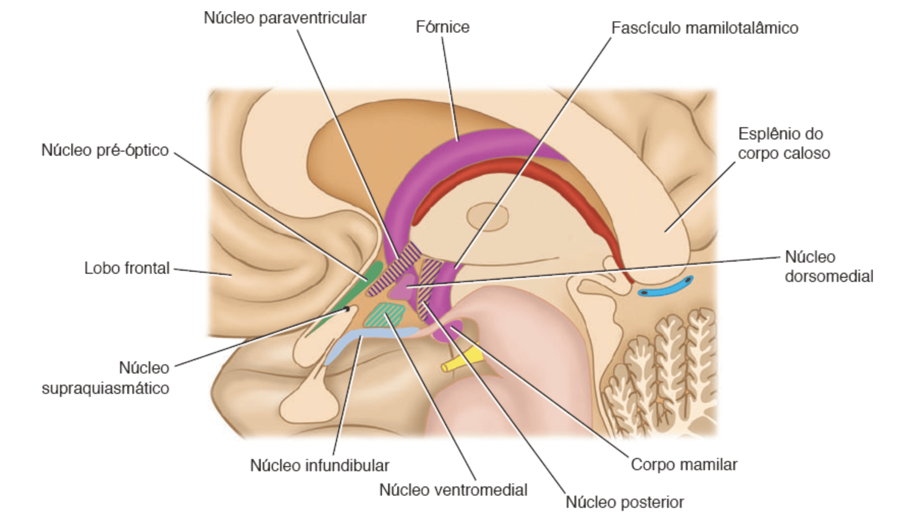
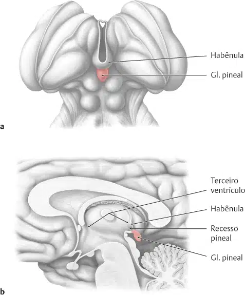
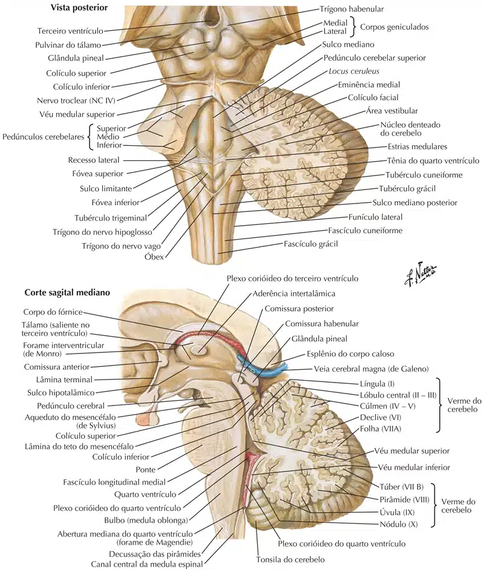
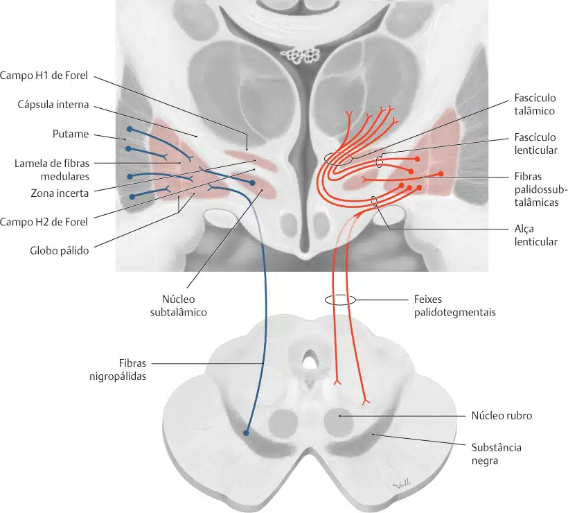

O diencéfalo é uma parte importante do encéfalo localizada acima do tronco cerebral e abaixo do cérebro (telencéfalo).
É composto por várias estruturas que desempenham papéis importantes na regulação de funções vitais, como a temperatura corporal, a sede, a fome e o sono, bem como em processos sensoriais e motoras.
As principais estruturas do diencéfalo são: Tálamo, Hipotálamo, Epitálamo, Subtálamo e Metatálamo (considerado por muitos autores como uma área pertencente ao tálamo).

Tálamo
São duas massas ovaladas, localizadas lateralmente ao IIIº ventrículo.
Sua porção anterior é denominada de tubérculo anterior do tálamo, e está localizada próxima ao forame interventricular (forame que comunica os ventrículos laterais com o IIIº ventrículo).
A parte posterior do tálamo é dilatada, denominada de pulvinar do tálamo.
Inferiormente ao pulvinar do tálamo está localizado o metatálamo.
O tálamo é constituído, internamente, por vários núcleos.
A maior parte dos núcleos talâmicos está relacionada com estímulos sensitivos tornando o tálamo um relé para as vias sensitivas.
O tálamo está associado ao controle somático, visceral e o sistema emocional.

Núcleos talâmicos
Grupo anterior
Recebem o trato mamilotalâmico proveniente dos corpos mamilares.
Os núcleos anteriores do tálamo também recebem conexões recíprocas do giro do cíngulo e hipotálamo.
A função dos núcleos anteriores do tálamo está estreitamente associada à do sistema límbico, e está relacionada com o tom emocional e os mecanismos da memória recente.
Grupo medial
A parte medial do tálamo contém o grande núcleo medial dorsal e vários núcleos menores.
O núcleo medial dorsal possui conexões bidirecionais com todo o córtex pré-frontal do lobo frontal do hemisfério cerebral, possui também conexões semelhantes com os núcleos hipotalâmicos.
Está interconectado com todos os outros grupos de núcleos do tálamo.
A parte medial do tálamo é responsável pela integração de uma grande variedade de informações sensitivas, incluindo informações somáticas, viscerais e olfatórias, e pela relação dessas informações com as sensações emocionais e estados subjetivos do indivíduo.
Grupo lateral
Os núcleos desse grupo são subdivididos em fileira dorsal e fileira ventral.
- Fileira dorsal
A fileira dorsal inclui o núcleo dorsolateral, o núcleo póstero-lateral e o pulvinar.
Os detalhes das conexões desses núcleos não são claros. Entretanto, sabe-se que eles possuem interconexões com outros núcleos do tálamo e com o lobo parietal, o giro do cíngulo e os lobos occipital e temporal.
- Fileira ventral
A fileira ventral consiste nos seguintes núcleos em sequência craniocaudal.
1 – Núcleo ventral anterior. Esse núcleo está conectado à formação reticular, à substância negra, ao corpo estriado e ao córtex pré-motor, bem como a muitos dos outros núcleos do tálamo. Como ele se situa no trajeto entre o corpo estriado e as áreas motoras do córtex frontal, esse núcleo provavelmente influencia as atividades do córtex motor.
2 – Núcleo ventral lateral. Esse núcleo possui conexões semelhantes às do núcleo ventral anterior; todavia, além disso, apresenta um importante aporte do cerebelo e um pequeno aporte do núcleo rubro. Suas principais projeções seguem para as regiões motora e pré-motora do córtex cerebral. Mais uma vez, aqui esse núcleo do tálamo provavelmente influencia a atividade motora.
3 – Núcleo ventral posterior. Esse núcleo é subdividido em núcleo ventral posteromedial e núcleo ventral posterolateral.
O núcleo ventral posteromedial recebe as vias trigeminal e gustatória ascendentes;
Enquanto o núcleo ventral posterolateral recebe os importantes tratos sensitivos ascendentes, os lemniscos medial e espinal.
As projeções talamocorticais desses núcleos importantes atravessam o ramo posterior da cápsula interna e a coroa radiada até as áreas sensitivas somáticas primárias do córtex cerebral no giro pós-central (áreas 3, 1 e 2).
- OUTROS NÚCLEOS
Outros núcleos do tálamo incluem os núcleos intralaminares, os núcleos medianos, o núcleo reticular, e os corpos geniculados medial e lateral.
1 – Os núcleos intralaminares do tálamo são pequenas coleções de células nervosas dentro da lâmina medular medial. Recebem fibras aferentes da formação reticular, bem como fibras dos tratos espinotalâmico e trigeminotalâmico; enviam fibras eferentes para outros núcleos do tálamo, que, por sua vez, projetam-se para o córtex cerebral, e fibras para o corpo estriado. Acredita-se que esses núcleos influenciem os níveis de consciência e vigília do indivíduo.
2 – Os núcleos medianos do tálamo consistem em grupos de células nervosas adjacentes ao terceiro ventrículo e na aderência intertalâmica. Recebem fibras aferentes da formação reticular. Suas funções precisas não são conhecidas.
3 – O núcleo reticular consiste em uma fina camada de células nervosas, situada entre a lâmina medular lateral, e o ramo posterior da cápsula interna. Fibras aferentes convergem para esse núcleo a partir do córtex cerebral e da formação reticular, e seus impulsos eferentes são principalmente para outros núcleos do tálamo. A função desse núcleo não está totalmente elucidada, mas pode estar relacionada com um mecanismo pelo qual o córtex cerebral regula a atividade do tálamo.
4 – O corpo geniculado medial forma parte da via auditiva e consiste em uma tumefação na face posterior do tálamo, embaixo do pulvinar do tálamo. As fibras aferentes para o corpo geniculado medial constituem o braço do colículo inferior e provêm do colículo inferior. Convém lembrar que o colículo inferior recebe a terminação das fibras do lemnisco lateral. O corpo geniculado medial recebe informações auditivas de ambas as orelhas, mas predominantemente da orelha oposta.
As fibras eferentes deixam o corpo geniculado medial para formar a radiação auditiva, que segue para o córtex auditivo do giro temporal superior.
5 – O corpo geniculado lateral forma parte da via visual e consiste em uma tumefação da face inferior do pulvinar do tálamo. O núcleo consiste em seis estratos de células nervosas e constitui a terminação de todas as fibras do trato óptico (exceto as fibras que seguem para o núcleo pré-tetal). As fibras são os axônios da camada de células ganglionares da retina e provêm da metade temporal do olho ipsilateral e da metade nasal do olho contralateral, e estas últimas fibras cruzam a linha mediana no quiasma óptico. Por conseguinte, cada corpo geniculado lateral recebe informações visuais do campo visual oposto.
As fibras eferentes deixam o corpo geniculado lateral para formar a radiação óptica, que segue para o córtex visual do lobo occipital.

Hipotálamo
Está localizado inferiormente ao tálamo, separado deste pelo sulco hipotalâmico.
O hipotálamo é constituído por:
Quiasma óptico (cruzamento das fibras nasais da retina);
Corpos mamilares (duas dilatações localizadas na fossa interpeduncular, formada por núcleos mamilares;
Túber cinério (formação triangular localizada entre o quiasma óptico e os corpos mamilares);
Infundíbulo (estende-se do túber cinério até a hipófise);
E Neuro-hipófise.
No interior do hipotálamo são encontrados diversos núcleos.
O fórnice divide os núcleos hipotalâmicos em grupos lateral e medial.
O hipotálamo está envolvido com diversas funções orgânicas, como:
Controle da parte autônoma do sistema nervoso, sede, fome, saciedade, regulação da temperatura, controle endócrino, sono, vigília, regulação da diurese e sensações relacionadas ao prazer e raiva.

Núcleos hipotalâmicos
Ao exame microscópico, o hipotálamo compõe-se de pequenas células nervosas dispostas em grupos ou núcleos, muitos dos quais estão claramente segregados uns dos outros.
Por motivos funcionais, a área pré-óptica está incluída como parte do hipotálamo.
Para fins descritivos, os núcleos são divididos por um plano parassagital imaginário em zonas medial e lateral.
Dentro desse plano, encontram-se as colunas do fórnice e o fascículo mamilotalâmico, que servem como marcadores.
Zona medial
Na zona medial, podem ser identificados as seguintes áreas com seus respectivos grupos de núcleos do hipotálamo, de anterior para posterior:
1 – Área Pré-óptica
- Núcleo pré-óptico – Relacionado com termorregulação, lesões nesta área podem causar Hipertermia;
2 – Área supra-óptica
- Núcleo supra-quiasmático – Relacionado com ritmos circadianos;
- Núcleo supra-óptico – Relacionado com ritmos circadianos e liberação de ocitocina;
- Núcleo paraventricular – Relacionado com liberação de ADH.
3 – Área tuberal
- Núcleo Arqueado / tuberal – Relacionado com liberação de GH e prolactina;
- Núcleos Ventro-medial e Dorso-medial – Relacionados com a saciedade.
4 – Área Mamilar / posterior
- Núcleo Posterior – Relacionado com termorregulação, lesões nesta área podem causar Hipotermia;
- Núcleo Mamilar (dentro do corpo mamilar) – Relacionado com emoções, comportamento e memória.


Epitálamo
Localizado superiormente ao mesencéfalo e, separado deste pela comissura posterior.
Apresenta formações endócrinas e não endócrinas.
A principal formação endócrina é a glândula pineal (localizada inferiormente o esplênio do corpo caloso).
A glândula pineal atua sobre as gônadas (testículos ou ovários), e produção cíclica de melatonina.
O órgão subcomissural é outra formação endócrina do epitálamo, está localizado abaixo da comissura posterior e participa do controle da glândula supra-renal.
As formações não endócrinas do epitálamo são:
- Trígono das habênulas (contendo os núcleos habenulares);
- Comissura das habênulas;
- Estrias medulares;
- E a comissura posterior.
Com exceção da comissura posterior, todos os outros estão relacionados com o sistema límbico.
A comissura posterior apresenta fibras nervosas provenientes do núcleo parassimpático do nervo oculomotor (“núcleo de Edinger Westphal”), influenciando no reflexo consensual.


Metatálamo
Localizado inferiormente ao pulvinar do tálamo, apresenta duas formações os corpos geniculados lateral e medial.
No corpo geniculado lateral está localizado o quarto neurônio da via visual, que envia fibras nervosas para o lobo occipital (cúneo e giro occipitotemporal medial).
O corpo geniculado lateral estabelece conexão com o colículo superior do mesencéfalo, por meio do braço do colículo superior.
O corpo geniculado medial estabelece conexão com o colículo inferior do mesencéfalo por meio do braço do colículo inferior.
No corpo geniculado medial está localizado o quarto neurônio da via auditiva.
Subtálamo
Localizado entre o tálamo (superiormente) e o mesencéfalo (inferiormente), e entre a cápsula interna (lateral) e hipotálamo (medial).
O subtálamo é a menor formação diencéfalica, sua principal formação é o núcleo subtalâmico, relacionado com o controle do movimento somático.
